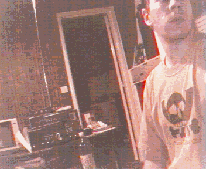

|
|
|


CONTRE-ESPIONNAGE ELECTRONIQUEAuteur : Robert Cervant brain@ausi.com
Manuel pratique de Contre-Espionnage Electronique pour AMATEUR : Le principe de ce petit manuel pratique en matière de contre-ingérence électronique, à pour unique but d'apporté les bases nécessaires pour déjoué les principaux systèmes d'écoutes clandestines pouvant être mit en pratique par des espions industriels, détectives privées, membres de services de sécurité privées, sectes, organisations criminels divers, dealers de drogues, pirates et hackers et en général tous individus ayant les connaissances minimum de l'usage de matériels spéciaux. Ce manuel pourra donc apporté à toute personne souhaitant protéger sa vie privée et professionnel, les nombreuses méthodes employé dans l'univers du renseignement électronique. =O= 100.000 gadgets électronique d'espionnage, c'est le nombre incroyable de ces matériaux "spéciaux" vendu durant la seul année 1996 par une société française! Autant dire pour vous et moi que l'ont soit un simple citoyen lambda ou une personne ayant une activité professionnel sensible, pouvont être victime d'une écoute clandestine. Il n'est pas rare de voir dans la presse, des affaires faisant objet de l'utilisation de micros-espions, écoutes téléphoniques etc .. Mais pour pouvoir lutter contre cela, faut il encore avoir une parfaite connaissance des moyens pouvant être mit en oeuvre ! =O= MICRO-RADIO MINIATURE VHF et UHF :
Bug d'ambiance et téléphonique / écoute de locaux - écoute téléphonique :
Le Micro-émetteur sans Quartz FM nommé BUG dans le jargon des professionnels, et surment le plus utilisé en matière de système d'écoute électronique. Il s’agit en général d'un petit cube de couleur noir de quelques centimètres, dont le contenue est un émetteur radio de très faible puissance (quelques mini Watt 70 à 100mW) doté d'une antenne de 50cm au maximum et fonctionnant dans les bandes de fréquences suivant : 88-108 Mhz, 115-130 Mhz, 140-160 Mhz, 395-410 Mhz (en France) En général ce type de micro-émetteur n'est que très rarement utilisé par des professionnels des écoutes clandestines, ce type de matériel étant plus usité par de simple particulier (mari jaloux, amateur de gadgets "spéciaux", bidouilleurs..). Une méthode simple pour les détectés, consiste à utilisé un banal poste de radio FM pour ceux de la gamme 88-108 Mhz. Pour les autres, un vulgaire récepteur multi-bande appelé aussi "scanner" suffira largement à leurs détection ou bien sinon un "fréquencemètre" (bien connu des radioamateurs). Enfin ces types de micros-émetteurs n'étant que très rarement stable en fréquence, sont peut fiable en matière d'écoute sérieuse et donc facilement repérable. Inutile donc d'aller acheté en Belgique ou en Angleterre, un appareil de détection pouvant vous êtres vendu plusieurs centaines de francs ! ( 1000 Fr. en moyenne).
Passons désormé à des types de Micros-émetteurs un peut plus sérieux .. à Quartz ! Il s’agit là, de matériels que l'ont classe dans la catégorie "Semi-professionnel" : Ce type de micro-émetteur bien que pratiquement identique aux autres ci-dessus, ont la particularité d'être beaucoup plus stable en fréquence grâce à un quartz. Celui-ci évitant que la fréquence de l'émetteur ne soit pas stable, ce qui est extrêmement important pour avoir une bonne réception du signal. La réception de ce type de micros-émetteurs se fait avec un scanner ou bien sinon par le biais d'un petit récepteur miniature comportant 2 ou 3 canaux (fréquences). Certains modèles utilisent la bande VHF haute dans les bandes 150-180 Mhz, mais pour une meilleur réception ainsi que pour plus de discrétion, ont les trouvent bien souvent dans la gamme UHF : 395-410 Mhz, 430-450 Mhz, 480-500 Mhz et plus haut dans les 900 Mhz. Tout comme les micros-émetteurs Amateurs, ils peuvent avoir l'apparence d'un cube, d'un stylo, d'une calculatrice, d'une crotte de chien ( Si si !!), d'un réveil, d'une borne de sortie de secours (pour la surveillance de locaux industriels), d'un pistolet ( la CIA durant la guerre froide avait équiper les armes de certains agents de micros-émetteurs ULTRA miniature), dans un clavier d'ordinateur, une prise gigogne téléphonique ou bien mural, un poste de télévision, une montre, un bouton de veste, dans une semelle de chaussure, une tringle à rideau, une chaîne HI-FI, un poste téléphonique fixe ou sans fils, un portable cellulaire GSM etc .. Tous les endroits sont bon pour y placer un micro-espion ! ! ! Tout dépend de la possibilité pour le poseur d'écoute de placer son matériel ainsi que de l'urgence et du niveau de priorité de l'opération ! Mais soyons réaliste ! Le micro-émetteur caché dans le stylo ou autres sont des cas extrêmement rare dans la pratique ! Car les professionnels, détectives, services de sécurité privée (et public), trafiquant de drogue etc.. Utilisent des bug en forme de cube ou de rectangle classique. N'oublions pas que plus le micro-émetteur est miniaturisé, plus sa porté est faible ! ! !
Le problème néanmoins de leurs détections est ici un peu plus compliquer .. En générale, un bon récepteur scanner à bande continue en couverture exemple : 150 Khz à 1650 Mhz (soit 1.650 Ghz), et suffisant pour leurs détection, mais il est préférable d'utilisé aussi un bon fréquencemètre afin d'être sur de pouvoir les localisés. Un émetteur-récepteur radioamateur peut aussi faire l'affaire en cas de besoin, ou bien sinon parfois même un poste de télévision ! Dans tous les cas encore une fois, il est inutile d'acheté un détecteur ! Car les détecteurs ne sont bien souvent que de vulgaire récepteurs multi-bandes ! Donc attention aux arnaques du marché juteux des matériels de contre-espionnage électronique.
Enfin voila la partie la plus sensible, puisqu'il s’agit là des systèmes d'écoutes électroniques utilisé par les agents des Services Secrets (CIA, DGSE, BND..) je ne rentrerai pas trop dans le détail faute d'informations suffisante sur le sujet, néanmoins il y à deux choses à retenir : 1) les services secrets font beaucoup appel aux basses fréquences , c'est à dire à des micros-émetteurs fonctionnant dans les bandes 30-50 Khz, 100-150 Khz, 250-350 Khz etc.. Bien souvent en AM au lieu de la FM traditionnel. Ces micros-émetteurs sont souvent auto-alimenté par le courant électrique 220V ou bien sinon par une ligne téléphonique ! (ou une batterie = rare) Ils peuvent aussi être doté d'un déclenchement par télécommande, afin d'être coupé durant une inspection de routine (c'est le cas pour de nombreuses Ambassades). 2) L'émission des micros-émetteurs est CRYPTE ! (sur le principe de l'inversion de fréquence parfois). enfin je pourrait cité aussi qu'il font appel à de très haute fréquences en UHF : 1500 Mhz, 1800 Mhz .. pour leurs bug UHF. Mais entres nous, il est peut probable que vous et moi faisions l'objet d'écoute de la DGSE un jour .. Leur détection peut être néanmoins fait par l'utilisation de récepteur scanner haut de gamme ! Pouvant être capable d'intercepté des fréquences dans la bande des 1 Ghz et plus. En ce qui concerne par contre les très basse fréquence (VLF,LF,HF), l'utilisation d'un récepteur Décamétrique pourra être utile. Nous retrouverons aussi encore une fois l'usage d'un fréquencemètre, ainsi que d'un testeur électrique ou autres appareils de mesure complexe.. =O= ECOUTE FILAIRE :
Après avoir abordé les écoutes par micros-émetteurs radio, nous allons donc étudier un peu le principe des écoutes clandestines filaires. Autant dire qu'il est extrêmement rare de voir des particuliers utilisé ce genre de système d'écoute ! Seul des professionnels ont accé en général à ce type de matériel pointu et très complexe à mettre en oeuvre. Le principe semble à priori relativement simple pourtant .. Il suffit de faire passé un câble audio à forte impédance (pour une bonne réception du signal BF) le long d'un mur par exemple, en le fixant dans la même gaine que les câbles électriques ou téléphoniques. D'un côté un micro miniature ce trouvant dans le domicile de la victime et de l'autre dans un appartement sur le même palier, un récepteur de signaux basse fréquence BF. La distance de l'écoute pouvant être de 100 M ! Il est conseiller dans ce cas d'utilisé des Amplificateurs de signaux le long du câble ou plus souvent des câbles ! Car lorsque des organisations comme les Services Secrets utilisent cet méthode (courante et régulièrement), il n'est pas rare que soit installé une dizaines de micros ! ! Le tout connecté à une batteries de magnétophones et de casques d'écoutes. Le seul moyen pour vous de pouvoir détecté ce type de système, étant de vérifier vos gaines électriques et téléphoniques. Il existe aussi une autre méthode d'écoute d'ambiance dont le principe et encore plus simple .. Il s’agit tout simplement au service secret de louer l'appartement juste à côté de celui de la victime et de percé dans les murs quelques trous de la grosseur d'une tête d'épingle ! ! En prenant soins de s’arrêter juste à la lisière du papier peint de la victime afin d'y installer des micros ou bien sinon un système de vision optique sub-miniature relier à un camescope ou magnétoscope. Pour la victime, il est quasi impossible de détecté ce type d'écoute ! ! Seul une société EXPERTE en contre-espionnage électronique pourra avoir les moyens techniques de repérait le système (prix moyen pour un particulier 9000 Fr. à plus de 15000 Fr., pour une société 50.000 Fr et plus !). Néanmoins le coût d'une telle installation (matériels et personnels) par un service secret, le réserve pour des cas d'espionnage extrêmement important ! =O=
DERIVATION TELEPHONIQUE :
A la base une dérivation téléphonique est très facile à mettre en oeuvre, que cela soit le fait d'un simple individu ou d'un service secret.. Dans le cas d'une écoute par dérivation par un service secret, il sera impossible pour vous de le détecté, car la dérivation sera fait directement au central téléphonique le plus proche. Mais si cela est le fait d'un service secret étranger sur un citoyen du territoire français, les agents secrets n'auront pas d'autres solutions que de devoir accédé soit à votre ligne téléphonique via le sous-répartiteur d'étage pour un bâtiment ou bien sinon celui de quartier pour un pavillon. En général, le fait de placer un magnétophone sur la ligne de la victime dans le sous-répartiteur, et valable pour une opération ponctuel de quelques heures uniquement. Mais si cela doit durait plusieurs semaines, il n'y aura pas d'autre choix que d'installer un micro-émetteur auto-alimenté par la ligne téléphonique de la victime dont la réception des signaux, s’effectuera sur un récepteur scanner relier à un magnétophone devant être relevé plusieurs fois par semaines ou bien sinon pour plus de sécurité à un émetteur VHF ou UHF de forte puissance utilisé comme "relais" , l'émission de l'émetteur dans un véhicule par exemple étant interceptable à plusieurs kilomètre ! Dans ce cas, bien que l'émission puisse être détecté par le service de contre-espionnage local, il ne pourront pas néanmoins trouver les commanditaires de l'opération ! Il est encore possible d'étudier d'autres schémas d'opération.. du même type. Mais encore une fois, ne soyons pas paranoïaque ! Dans la pratique, vous aurait surment plus à faire à un fraudeur du téléphone ou bien à un espion amateur.. Une simple surveillance du sous-répartiteur durant quelques heures de votre part, devrait vous permettrais de trouver votre "espion". Dans le cas contraire, une surveillance discrète de la police ou de la gendarmerie devrait être efficace. Une seul erreur à ne pas faire : ne pas téléphoné de chez vous !
=O= SYSTEME COMINT :
Interception radio à longue portée : Téléphonique et de réseaux de radiocommunications. Ironie des méthodes d'écoutes clandestines, une des plus faciles à mettre en oeuvre et celle de l'interception hertzienne. Pour cela un service secret ou bien un espion amateur, n'aura qu'à utilisait un simple récepteur SCANNER et/ou DECAMETRIQUE pour l'opération ! Les récepteurs de type scanner couvrant en général une très large gammes de bandes de fréquences aussi bien VHF qu' UHF ! (30 Mhz à 1 Ghz ). Ainsi il est très facile d'intercepté le trafic radio de nombreuses administrations ! Police nationale, Armée, Pompiers etc .. Mais dans notre cas, nous allons abordé les risques d'écoute des téléphones sans fils (TSF), des radiotéléphones cellulaires (analogique), des radio-messageries (Pagers). Il y à des cas ou il est inutile pour un agent secret ou un espion amateur d'être obligé de jouer au poseur de micros .. Le simple fait, que la victime soit utilisatrice d'un TSF, et un véritable jeu d'enfant pour eux ! Ainsi ils leurs suffit de programmer dans le scanner, les fréquences des téléphones sans fils agrée ou non , pour avoir à loisir la possibilité d'écouté toutes les communications de la victime et même de décodé les numéros de téléphones (DTMF) via un petit boîtier (de la grosseur d'un pager!) ou bien sinon en utilisant un logiciel informatique ad doc (Wintone etc..). Ils peuvent aussi relier le scanner à un magnétophone dôté d'un système VOX, ce qui mettra le magnétophone en route au seul son de la voix ! (économie de bande !). Dans le cas, ou la victime serait prudente et utiliserait un système de cryptophonie de type inversion de fréquence, il n'y aura pas de problème particulier aux espions pour la réception si leur récepteur scanner et dôté de la démodulation BLU. La seul parade à ce type d'écoute étant d'utilisé un poste téléphonique fixe ! Tout en espérant, que ne soit pas installer un micro-espion sur la ligne ou bien une dérivation ..
Et les radiotéléphones cellulaires .. Ceci est un vieille exemple car ne concernant que les portables Analogique ! Il y a néanmoins encore en service quelques téléphones cellulaires de voitures de type Radiocom 2000 et SFR en service (pour combien de temps?). Durant les années 1980 just'en 1993 +/-, le réseau téléphonique cellulaire était en analogique, ce qui donné la possibilité à de nombreux espions amateurs, dealers de drogue etc.. d'avoir accé très facilement à tous les téléphones cellulaires ! Néanmoins, il était difficile de traquer le cellulaire d' une victime de définie, car celle-ci changeant de fréquence radio régulièrement selon la zone de couverture de l'émetteur cellulaire. Seul les services secrets pouvait se permettre de traquer une personne grâce à l'aide de France Telecom. L'unique parade à l'époque était d'utilisé un module de cryptophonie relier au cellulaire, mais dont l'utilisation en France était interdit au citoyen lambda. Aujourd'hui avec l'arrivée du cellulaire numérique de type GSM, les gens sont persuadé en général que leurs conversations sont crypté et donc impossible à intercepté ! Hors cela est FAUX ! Il suffit de voir au USA, il n'est pas du tout un problème d'intercepté les cellulaires GSM ! Et bien que notre système soit un peu différent, cela ne pause dans la pratique en fait aucun problème pour un service secret et prochainement (d'ici 2 à 5 ans) pour les espions amateurs, pirates et hackers, truands.
Quant au PAGER, idem que pour les TSF et Cellulaire analogique !
Un espion amateur n'aura qu'à utiliser un scanner relier à un petit décodeur POCSAG ou bien à un ordinateur dôté d'un logiciel de type POC32, pour pouvoir lire en direct tous les messages des TATOO, EXPRESSO etc .. L'unique parade contre ce type d'interception, étant d'utilisé un code secret pour communiqué. D'ailleurs les services secrets et les trafiquants de drogues ainsi que les terroristes utilisent souvent un code secret lors de l'usage de radio-messagerie !
=O= ATTENTION : Ce petit manuel pratique n'a était fait que pour ce prémunir contre les tentatives d'espionnage électroniques. En aucun cas celui-ci ne doit être considéré comme étant un manuel de formation en écoute clandestine ! L'objet de ce manuel n'étant pas d’incité le lecteur à mettre en oeuvre les méthodes expliqué qui sont toutes illicites en France. =O= INFORMATION : Ce manuel de contre-espionnage électronique n'étant pas exausif, il est possible d'avoir de plus ample information sur le sujet en consultant Internet et les journaux spécialisé en sécurité. =O=
 CHAOS.RADIO.CLUB.FRANCE C.R.C.F |
|
|
|